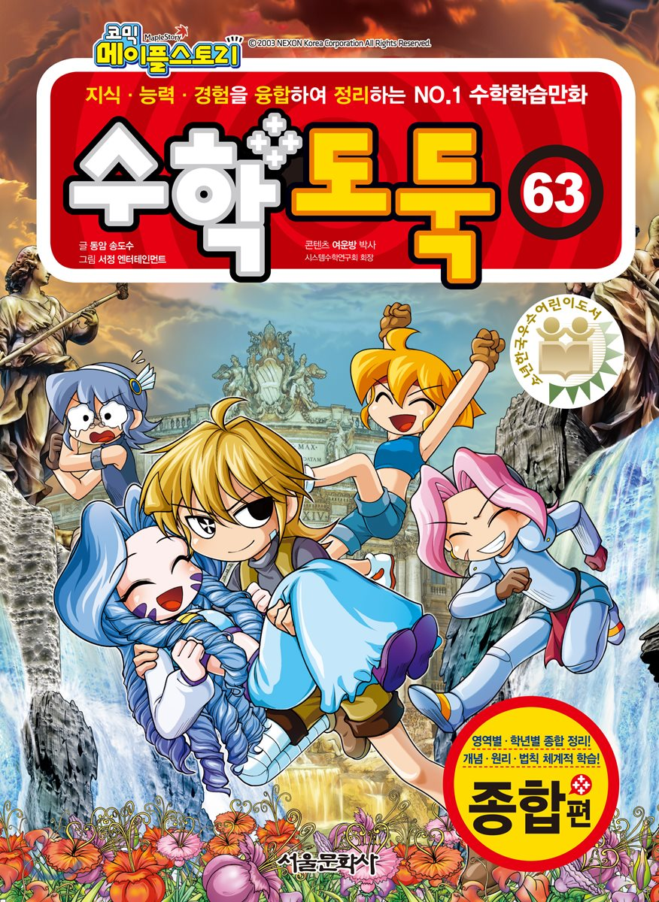

디지털 매체를 통해 사람들이 보고, 듣고, 즐길 수 있는 여러가지 것들을 두루 가리키는 표현
대표적인것으로 소설, 만화, 게임, 애니메이션, 방송등이 있다.
즉, 문화적인 요소를 디지털 매체를 통해 사람들에게 전달하는 것이라 할 수 있다.
자연상태에서 벗어나 일정한 목적 또는 생활이상을 실현하고자 사회구성원에 의하여 습득, 공유, 전달되는 행동 양식이나 생활양식을 말한다.
인터넷이나 컴퓨터 통신등을 통하여 제공되는 각종 정보를 디지털방식으로 제작해 처리, 유통하는 모든 내용물을 칭한다.
기존의 문화콘텐츠 중 스마트 기기를 통해 공급이 되면 곧 '스마트 문화콘텐츠'가 된다.
